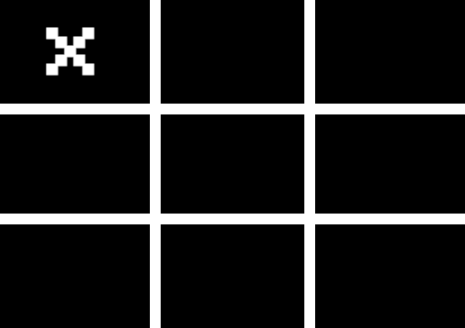
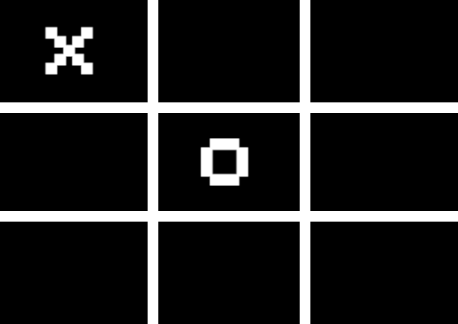
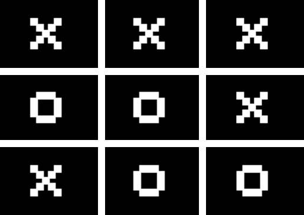

PLAYING THE GAME
Tic-Tac-Toe, also known as Noughts and Crosses, is a game played by many children around the world. The game is very old,
and early versions of it can be found in ancient Egypt and the Roman Empire.
The game starts with a three by three grid of squares, or a pound symbol.
Two players take turns filling in the grid with their respective symbol (X or O). X always starts, and O goes second.
If one player takes a certain square, their oponent will not be able to take that square for the rest of the game.
In order to win, you must line up three consecutive spaces of your symbol either vertically, horizontally, or diagonally.
If every space has been filled in and there has not been a three-in-a-row yet, the game is considered a tie and is over.
VOLUME
This game features sound effects for every possible interaction you can have with the game.
You can change the volume in the settings menu.
Additionally, you can toggle mute with the "M" key.
SUGGESTIONS
Suggestions show you a ghost of your icon on the board on the square you hover over. If you use the keyboard for input, the suggestion will move according to the keys you press.
To turn suggestions off, go to the settings menu.
SWITCHING TURNS
By default, player one will always go first and player two will always go second.
If you would like to switch who goes first each turn, you can enable this in the settings.
THE AI
You can either play against another human player, or play against an AI. The AI is a computer generated player you can play a game against. It will always be player two.
The AI has four difficulty options: easy, normal, hard, and impossible. As you go up each level, the AI becomes smarter and smarter, making fewer mistakes each level.
The AI will recognize when you are about to win and block it, as well as when it is can win and play the necessary move, too.
By default, the AI will be enabled. To turn it off, go to the settings.
FULLSCREEN
You can enable fullscreen by going to the settings menu. This will make the game take up the entirety of your screen.
You can exit fullscreen mode by going to the settings menu, pressing F, or pressing escape.
ICONS
In addition to the traditional X and O, you have an array of other icons you can choose for either player.
Player One and Player Two can each individually have their icons changed to anything different.
In order to change the icon for each player, go to the settings menu.
CONTROLS
You can play this game through the use of a mouse, but the ability to move and play with a keyboard is available.
Note that in order to fully utilize keyboard controls, suggestions must be turned on.
| Key | Action |
|---|---|
| Enter, Spacebar | Press a button, choose a square |
| Up, W | Go up an option |
| Down, S | Go down an option |
| Left, A | Go Left an option |
| Right, D | Go Right an option |
| M | Mute, Unmute |
| F | Toggle fullscreen |
| Control + Save | Save a round |
| Escape | Return to main menu mid-game, exit fullscreen mode |
| Backspace | Return to previous menu |
DOWNLOADING A GAME
Once a round has ended, you are able to download a png image of the round you just played. This will save an image to your computer of the round, and will save the score as the title of the image.
Please note that on some computers and browsers, this feature may be broken.
SAVING SETTINGS AND COOKIES
This game uses cookies in your browser to save your settings. They will delete exactly two days after the last time you open this webpage.
Upon leaving the website and returning later, all your settings data will be loaded and immediately set for a game.
CHANGELOG
CREDITS AND ACKNOWLEDGEMENTS
LICENSE
MIT License
Copyright (c) 2022 Zalan Shah
Permission is hereby granted, free of charge, to any person obtaining a copy
of this software and associated documentation files (the "Software"), to deal
in the Software without restriction, including without limitation the rights
to use, copy, modify, merge, publish, distribute, sublicense, and/or sell
copies of the Software, and to permit persons to whom the Software is
furnished to do so, subject to the following conditions:
The above copyright notice and this permission notice shall be included in all
copies or substantial portions of the Software.
THE SOFTWARE IS PROVIDED "AS IS", WITHOUT WARRANTY OF ANY KIND, EXPRESS OR
IMPLIED, INCLUDING BUT NOT LIMITED TO THE WARRANTIES OF MERCHANTABILITY,
FITNESS FOR A PARTICULAR PURPOSE AND NONINFRINGEMENT. IN NO EVENT SHALL THE
AUTHORS OR COPYRIGHT HOLDERS BE LIABLE FOR ANY CLAIM, DAMAGES OR OTHER
LIABILITY, WHETHER IN AN ACTION OF CONTRACT, TORT OR OTHERWISE, ARISING FROM,
OUT OF OR IN CONNECTION WITH THE SOFTWARE OR THE USE OR OTHER DEALINGS IN THE
SOFTWARE.
Volume:
Suggestions:
Switch order each game:
Play against AI:
AI Difficulty:
Fullscreen:
Player One Icon:
Player Two Icon:
Theme:
V1.17.1: World of Color
CHANGELOG:
TO DO:
V1.16.3: Beckend Organization and Fixes
CHANGELOG:
TO DO:
V1.16.2: Fixed Keyboard Controls
CHANGELOG:
TO DO:
V1.16.1: New Font; More Keyboard Functionality; Revamped Instructions
CHANGELOG:
TO DO:
V1.15.1: First Keyboard Functionality
CHANGELOG:
TO DO:
V1.14.2: Updated README
CHANGELOG:
TO DO:
V1.14.1: Difficulty Levels
CHANGELOG:
TO DO:
V1.13.1: Fullscreen
CHANGELOG:
TO DO:
V1.12.1: Downloading Rounds
CHANGELOG:
V1.11.9: LICENSE
CHANGELOG:
V1.11.8: Buttons Initialization Issue
CHANGELOG:
V1.11.7: Fixed Board Displaying Incorrectly
CHANGELOG:
V1.11.6: Many Backend Changes; Fixed Audio Spam-click Issue
CHANGELOG:
V1.11.5: Even More Bugfixes
CHANGELOG:
V1.11.4: More Bugfixes
CHANGELOG:
V1.11.3: Fixed AI Toggle Initialization
CHANGELOG:
V1.11.2: Minor Bugfixes to AI
CHANGELOG:
V1.11.1: AI; Switch Turns
CHANGELOG:
V1.10.4: New Symbols
CHANGELOG:
TO DO:
V1.10.3: Minor Tweaks to View
CHANGELOG:
TO DO:
V1.10.2: Finished Sound Effects
CHANGELOG:
TO DO:
V1.10.1: New Sound Effects; Game Menu
CHANGELOG:
TO DO:
V1.9.1: Cookies
CHANGELOG:
TO DO:
V1.8.2: README
CHANGELOG:
TO DO:
V1.8.1: Customizable Icons
CHANGELOG:
TO DO:
V1.7.2: Backend Fixes
CHANGELOG:
TO DO:
V1.7.1: Post-game Buttons
CHANGELOG:
TO DO:
V1.6.4: Polish
CHANGELOG:
TO DO:
V1.6.3: Toggle Suggestions
CHANGELOG:
TO DO:
V1.6.2: <DOCTYPE html>
CHANGELOG:
TO DO:
V1.6.1: Suggestions
CHANGELOG:
TO DO:
V1.5.1: Instructions
CHANGELOG:
TO DO:
V1.4.1: Menus
CHANGELOG:
TO DO:
V1.3.2: Delete .vscode Directory
CHANGELOG:
TO DO:
V1.3.1: Initial Sounds and External Links
CHANGELOG:
TO DO:
V1.2.3: Favicon
CHANGELOG:
TO DO:
V1.2.2: Minor Visual Improvements
CHANGELOG:
TO DO:
V1.2.1: Recognition for End of Game
CHANGELOG:
TO DO:
V1.1.1: Made Buttons Work
CHANGELOG:
TO DO:
V1.0.1: Initial Commit
CHANGELOG:
TO DO: